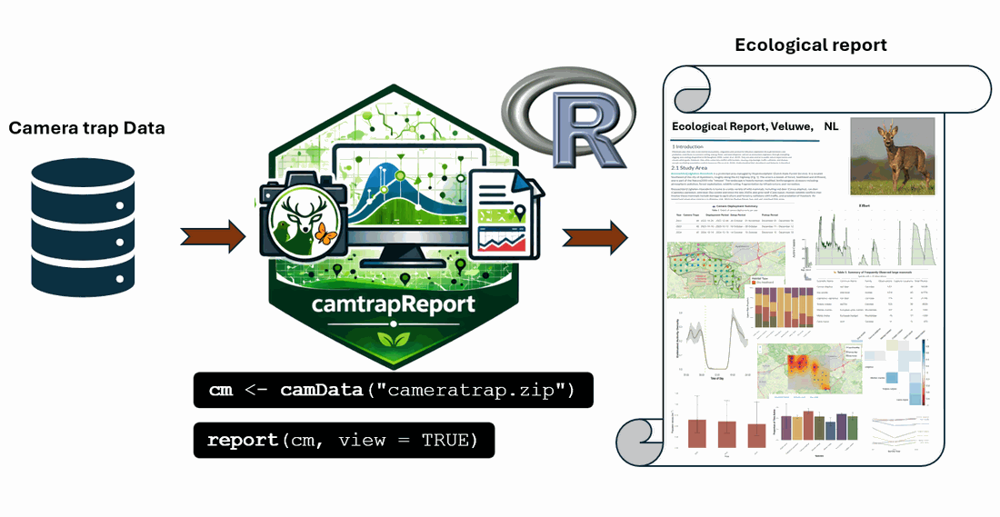

Ecological Report
Elham Ebrahimi
Source:vignettes/articles/ecological-report.Rmd
ecological-report.RmdFrom camera-trap data to ecological reporting
The Ecological Report integrates camera-trap data, sampling summaries, ecological analyses, maps, figures, and data-informed narratives into a reproducible, modular HTML report. Users can customise its content to suit different monitoring objectives, datasets, and analytical requirements.
A Data Status Check is recommended before ecological analysis to identify potential data-quality issues.
Reporting workflow
Prepare → Check → Configure → Report
Import Camtrap DP data using camData(), assess data
quality with status(), select relevant modules and
analytical settings, and generate the Ecological Report using
report().
The diagram shows how the selected modules contribute to report generation.

Figure 1. Workflow from Camtrap DP inputs and report configuration to an Ecological Report.
Generate your first report
This example uses the bundled Camtrap DP dataset, habitat data, and study-area boundary. The dataset is copied to a writable folder to protect the installed package files.
library(camtrapReport)
# Prepare a writable copy of the example dataset
example_root <- tempfile("camtrapReport-example-")
dir.create(example_root)
file.copy(
system.file("external", "dataset", package = "camtrapReport"),
example_root,
recursive = TRUE
)
# Load supplementary data
habitat <- read.csv(
system.file("external", "habitat", "habitat.csv",
package = "camtrapReport")
)
study_area <- system.file(
"external", "study_area", "study_area.shp",
package = "camtrapReport"
)
# Import data and generate reports
cm <- camData(
data = file.path(example_root, "dataset"),
habitat = habitat,
study_area = study_area
)
status(cm, view = FALSE) # Assess data quality
report(cm, view = TRUE) # Generate and open the Ecological ReportSave the report
By default, the report is saved to a temporary directory. Use
filename to specify an output location and
view = FALSE to generate the report without opening it.
dir.create("reports", recursive = TRUE, showWarnings = FALSE)
report_file <- report(
cm,
filename = "reports/ecological_report_2026",
view = FALSE
)Note: Existing reports with the same filename may be overwritten. Use versioned filenames to preserve outputs from different monitoring rounds or analyses.
Report content and customisation
The Ecological Report supports analyses of sampling effort, species detections, richness, activity patterns, co-occurrence, habitat associations, and population density. Available outputs depend on the selected modules, data, and analytical requirements.
Explanatory text draws on module templates, dataset metadata, and computed results; review it before sharing.
Explore the Module Catalog for available analyses, Analytical Profiles for reusable configurations, and Module Management for customisation.
Explore example ecological reports
Explore Ecological Reports from different monitoring projects. Select a preview to open the corresponding HTML report and see how analyses and outputs vary across datasets.
Configure the Ecological Report
Customise report metadata, focal species groups, years, filters, and
sections through the camReport object. The
following examples are independent; adapt species, years, file
paths, and settings to your own dataset.
Report metadata
Use info() to inspect and update report information,
including titles, authors, institutional affiliations, and logos.
# Inspect metadata
info(cm)
# Update selected fields
info(cm, name = "title") <- "Wildlife Monitoring Report"
info(cm, name = "subtitle") <- "Ecological assessment of camera-trap data"
info(cm, name = "authors") <- c("Elham Ebrahimi", "Patrick Jansen")
info(cm, name = "institute") <- "Utrecht University"
info(cm, name = "siteName") <- "Hoge Veluwe National Park"
info(cm, name = "logoPath") <- "path/to/logo.png"Focus groups
Focus the report on an available taxonomic or ecological group, or define a group of interest.
# Explore available groups
names(cm$group_definition)
# Select an existing group
cm$set_focus_group(x = "birds")
cm$setup()
# Inspect a group definition
cm$get_group("birds")To define a custom species group:
Monitoring years and filters
Select the monitoring period and adjust the minimum observation-count filter to suit the analytical objectives.
# Inspect available years
cm$extractYears()
# Select years and refresh the configuration
cm$years <- 2023:2024
cm$setup()
# Set the minimum observation count
cm$filterCount <- 10Choose years present in the dataset and a threshold appropriate for your analysis.
Report sections
Select the analyses and sections to include in the final report.
# Inspect available sections
section_names()
listReportSections(cm)
# Exclude selected analyses
selected <- section_names(
exclude = c("richness", "co_occurrence")
)
# Apply the configuration
sections(cm, selected)
# Generate the customised report
report(cm, view = TRUE)
# To reset the section configuration, reapply the original profile
# or a previously saved selection of sections.Reuse and extend configurations
Analytical Profiles provide reusable selections of modules for different monitoring workflows. Analytical methods and settings are defined through the associated modules and report configuration. See Analytical Profiles.
To modify existing analyses or develop new modules, work in a writable project directory rather than editing installed package files. See Module Management.
Interpretation and reproducibility
Interpret outputs in light of sampling design, effort, detectability, and method-specific assumptions. Capture-based indices are not direct measures of abundance; density models require suitable data and parameterisation.
Missing outputs may reflect unmet prerequisites rather than ecological absence. Review methods and generated narratives, retain data and settings for reproducibility, and protect sensitive species locations when sharing. Consult the Module Catalog for module requirements.